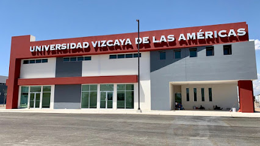

Universidad Vizcaya de las Américas (UVA)
CONTÁCTANOSUbica al campus Vizcaya más cerca de ti
Cuando se trata de lograr el éxito, la formación profesional es sin duda la mejor decisión. Con 34 campus alrededor de México y una Universidad en línea, en Universidad Vizcaya hemos acercado la educación profesional enfocada en el desarrollo integral a más de 80 mil egresados Vizcaya.
¿Por qué somos diferentes?
Somos una comunidad con espíritu de superación y pasión por nuestros sueños, sabemos que ser un excelente profesional no es posible si no somos excelentes seres humanos y por esto buscamos vivir nuevas experiencias que ayuden a cambiar nuestro entorno.
¿Qué requisitos necesito para aplicar en una convocatoria de movilidad internacional?
Pueden variar en cada convocatoria, dependiendo de la institución receptora y los acuerdos establecidos en cada convenio. Pero aquí te enlisto algunos requisitos generales:
Ser alumno activo
No tener materias reprobadas
No tener adeudo en el plantel
Contar con un seguro médico de estudiante vigente durante la solicitud y estancia
Cumplir con el idioma requerido en la institución receptora
Tener pasaporte vigente
En su caso, tener VISA vigente
Contar con el recurso económico necesario para cubrir los gastos de traslado, hospedaje y alimentación (en caso de que no se otorgue beca para alguno de éstos)
Licenciaturas
Licenciatura en Administración de Empresas
Contaduría Pública
Comercio Internacional y Aduanas
Arquitectura
Ingeniería en Procesos de Manufactura
Ingeniería en Aeronáutica
Gastronomía
Ciencias de la Educación
Correo: asuntos_internacionales@uva.edu.mx
Teléfono: (311) 129 5610 EXT: 137
Horario de Atención: lunes a viernes de 9:00 am a 2:00 p.m.
y de 4:00p.m a 7:00 p.m. Sábados de 9:00 a.m. a 2:00 p.m.
